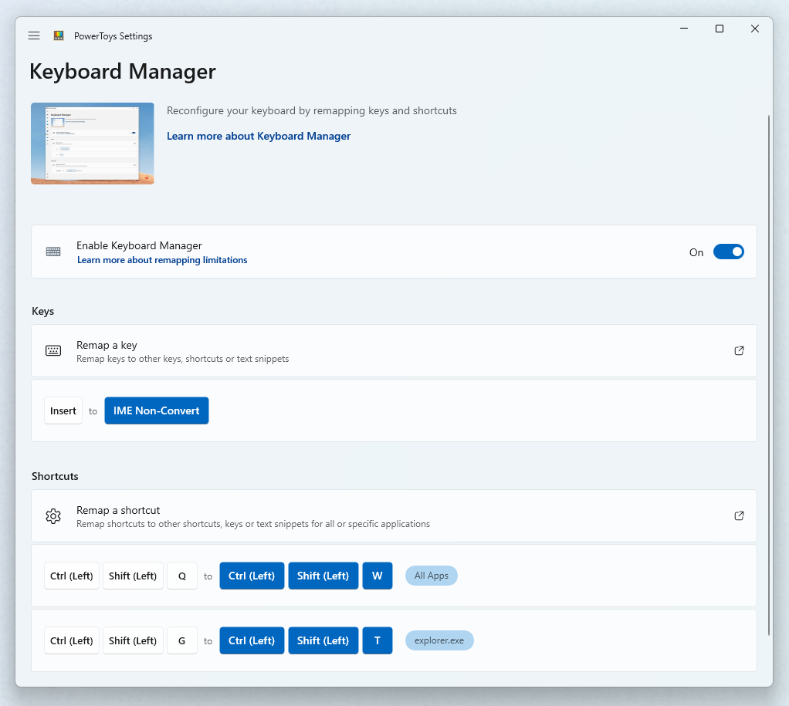
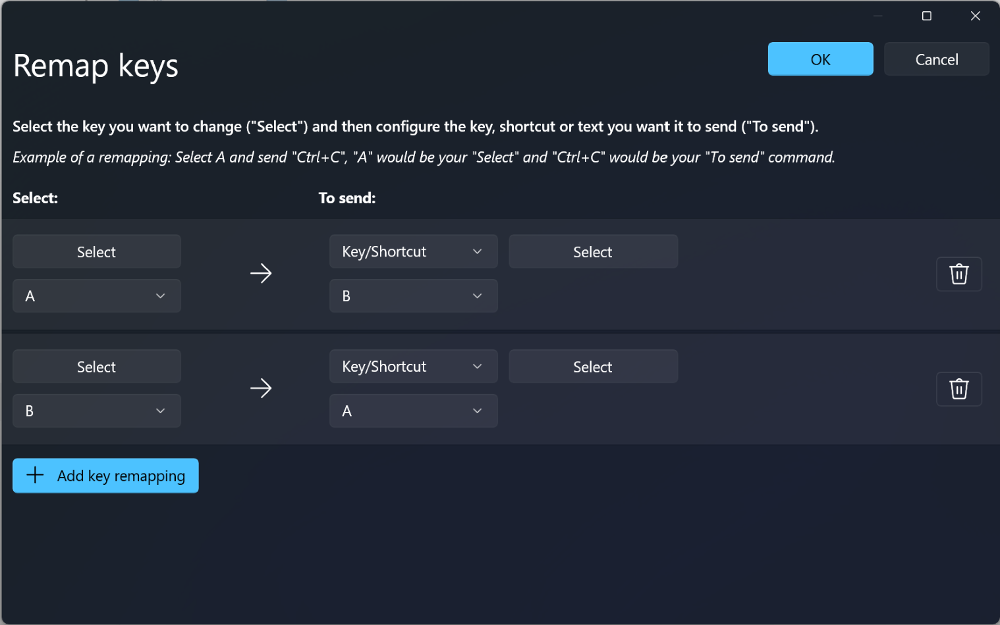
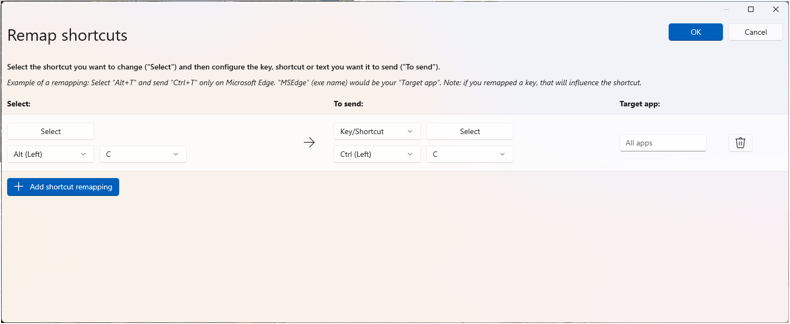
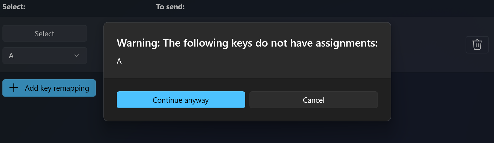
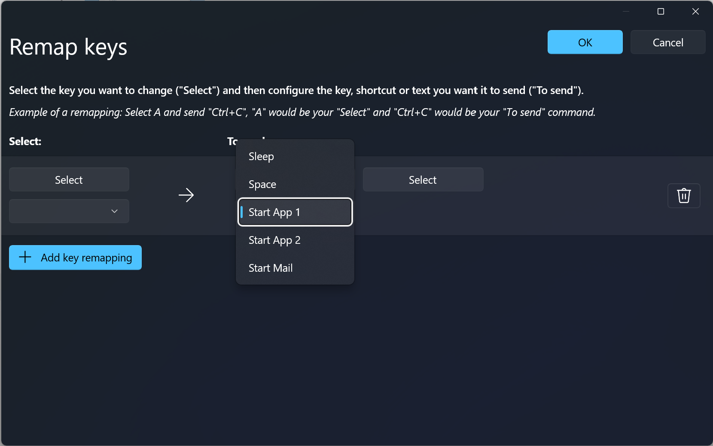

Keyboard Manager utility
The PowerToys Keyboard Manager enables you to remap keys and shortcuts on your keyboard for enhanced productivity. This powerful utility allows you to customize your keyboard layout by reassigning keys, creating custom shortcuts, and even mapping keys to text sequences.
For example, you can exchange the letter A for the letter B on your keyboard. When you press the A key, a B will be inserted.

You can exchange shortcut key combinations. For example: The shortcut key Ctrl+C will copy text in many applications. With PowerToys Keyboard Manager utility, you can swap that shortcut for ⊞ Win+C. Now, ⊞ Win+C will copy text. If you do not specify a targeted application in PowerToys Keyboard Manager, the shortcut exchange will be applied globally across Windows.
Also, you can exchange a key or shortcut to an arbitrary unicode text sequence. For example, you can exchange the letter H for the text Hello!. When you press the H key, Hello! will be inserted. Similarly, you can use the shortcut Ctrl+G to send some text (e.g. Hello from shortcut!).
PowerToys Keyboard Manager must be enabled (with PowerToys running in the background) for remapped keys and shortcuts to be applied. If PowerToys is not running, key remapping will no longer be applied.
Important
There are some shortcut keys that are reserved by the operating system or cannot be replaced. Keys that cannot be remapped include:
- ⊞ Win+L and Ctrl+Alt+Del cannot be remapped as they are reserved by the Windows OS.
- The Fn (function) key cannot be remapped (in most cases). The F1 ~ F12 (and F13 ~ F24) keys can be mapped.
- Pause will only send a single key-down event. So mapping it against the backspace key, for instance, and pressing and holding will only delete a single character.
- ⊞ Win+G often opens the Xbox Game Bar, even when reassigned. Game Bar can be disabled in Windows Settings.
Settings
To create mappings with Keyboard Manager, open the PowerToys Settings. In PowerToys Settings, on the Keyboard Manager tab, you'll see options to:
- Open the Remap Keys settings window by selecting Remap a key
- Open the Remap Shortcuts settings window by selecting Remap a shortcut
Remapping keys
To remap a key, open the Remap Keyboard settings window with Remap a Key. When first opened, no predefined mappings will be displayed. Select Add key remapping to add a new remap. Note that various keyboard keys actually send a shortcut.
Once a new remap row appears, select the input key whose output you want to change in the "Select" column. Select the new key, shortcut, or text value to assign in the "To send" column.
For example, to press A and have B appear:
| Select: | To send: |
|---|---|
A |
B |
To swap key positions between the A and B keys, add another remapping with:
| Select: | To send: |
|---|---|
B |
A |

Remapping a key to a shortcut
To remap a key to a shortcut (combination of keys), enter the shortcut key combination in the "To send" column.
For example, to press the Ctrl key and have it result in ⊞ Win + ← (left arrow):
| Select: | To send: |
|---|---|
Ctrl |
⊞ Win + ← |
Important
Key remapping will be maintained even if the remapped key is used inside another shortcut. The order of key press matters in this scenario as the action is executed during key-down, not key-up. For example, pressing Ctrl+C would result as ⊞ Win + left arrow + C. Pressing the Ctrl key will first execute ⊞ Win + left arrow. Pressing the C key first will execute C + ⊞ Win + left arrow.
Remapping a key to text
To remap a key to arbitrary unicode text, in the "To send" column first select "Text" in the combo box and then fill the text box with wanted text.
For example, to press the H key and have it result in Hello!:
| Select: | To send: |
|---|---|
H |
Hello! |
Remapping shortcuts
To remap a shortcut key combination, like Ctrl+C, select Remap a shortcut to open the Remap Shortcuts settings window.
When first opened, no predefined mappings will be displayed. Select Add shortcut remapping to add a new remap.
When a new remap row appears, select the input keys whose output you want to change in the "Select" column. Select the new shortcut value to assign in the "To send" column.
For example, the shortcut Ctrl+C copies selected text. To remap that shortcut to use the Alt key, rather than the Ctrl key:
| Select: | To send: |
|---|---|
Alt + C |
Ctrl + C |

There are a few rules to follow when remapping shortcuts. These rules only apply to the "Shortcut" column.
- Shortcuts must begin with a modifier key: Ctrl, Shift, Alt, or ⊞ Win
- Shortcuts must end with an action key (all non-modifier keys): A, B, C, 1, 2, 3, etc.
- Shortcuts can't exceed four keys in length, or five if the shortcut is a 'chord'.
Shortcuts with chords
Shortcuts can be created with one or more modifiers and two non-modifier keys. These are called "chords". In order to create a chord, select Edit to open the dialog to record the shortcut using the keyboard. Once opened, toggle on the Allow chords switch. This allows you to enter two non-modifier keys.
For example, you can create shortcuts using a chord based on 'V' for Volume Up and Volume Down like this:
| Select: | To send: |
|---|---|
Shift + Ctrl + V , U |
Volume Up |
Shift + Ctrl + V , D |
Volume Down |
Chords are handy if you have a number of shortcuts that are similar, and it makes sense to have them all start with the same non-modifier key.
Remap a shortcut to a single key
It's possible to remap a shortcut (key combination) to a single key press by selecting Remap a shortcut in PowerToys Settings.
For example, to replace the shortcut ⊞ Win+← (left arrow) with a single key press Alt:
| Select: | To send: |
|---|---|
⊞ Win + ← |
Alt |
Important
Shortcut remapping will be maintained even if the remapped key is used inside another shortcut. The order of key press matters in this scenario as the action is executed during key-down, not key-up. For example: pressing ⊞ Win+←+Shift would result in Alt + Shift.
The Exact Match option can be selected when creating a shortcut to single key mapping. Without specifying Exact Match, if the shortcut is pressed and other keys are also pressed, the single key mapping will still be sent.
For example, when replacing the shortcut Ctrl+C with an A key press, if Exact Match is enabled, the shortcut will only be replaced if no other keys are pressed.
Remap a shortcut to text
For example, to replace the shortcut Ctrl+G with Hello! text, choose Text in the combo box and enter "Hello!":
| Select: | To send: |
|---|---|
Ctrl + G |
Hello! |
Remap a shortcut to start an app
Keyboard Manager enables you to start applications with the activation of any shortcut. Choose Start App for the action in the "To:" column. There are a few options to configure when using this type of shortcut.
| Option | Meaning |
|---|---|
| App | This is the path to an executable. Environment variables will be expanded. |
| Args | Arguments that will be sent to the app. |
| Start in | The working directory for the app to start in. |
| Elevation | Specify the elevation level to start the app. The options include Normal, Elevated, and Different User. |
| If running | What action should be taken when this shortcut is activated while the app is already running? The options are: Show Window, Start another instance, Do nothing, Close, End task. |
| Visibility | The app will be visible. This is useful if the app is a console or something you don't want to see. |
Remap a shortcut to open a URI
This type of shortcut action will open a URI. The only input is the actual Path/URI. Almost anything you can issue on the command line should work. See Launch an app with a URI for more examples.
App-specific shortcuts
Keyboard Manager enables you to remap shortcuts for only specific apps (rather than globally across Windows).
For example, in the Outlook email app the shortcut Ctrl+E is set by default to search for an email. If you prefer instead to set Ctrl+F to search your email (rather than forward an email as set by default), you can remap the shortcut with "Outlook" set as your "Target app".
Keyboard Manager uses process names, not application names, to target apps. For example, Microsoft Edge is set as "msedge" (process name), not "Microsoft Edge" (application name). To find an application's process name, open PowerShell and enter the command Get-Process or open Command Prompt and enter the command tasklist. This will result in a list of process names for all applications you currently have open. Below is a list of a few popular application process names.
| Application | Process name from tasklist |
|---|---|
| Microsoft Edge | msedge.exe |
| OneNote | onenote.exe |
| Outlook | outlook.exe |
| Teams | ms-teams.exe |
| Adobe Photoshop | Photoshop.exe |
| File Explorer | explorer.exe |
| Spotify Music | spotify.exe |
| Google Chrome | chrome.exe |
| Excel | excel.exe |
| Word | winword.exe |
| Powerpoint | powerpnt.exe |
Note
If you use tasklist from the Command Prompt to get the list of processes, the process name will be listed in the Image Name column. The process names in Get-Process will not include the .exe file extensions. These process names do not match the process names in Windows Task Manager window.
How to select a key for remapping
To select a key or shortcut to remap:
- Select Select.
- Use the drop-down menu.
Once you select Select, a dialog window will open in which you can enter the key or shortcut, using your keyboard. Once you’re satisfied with the output, hold Enter to continue. To leave the dialog, hold Esc.
Using the drop-down menu, you can search with the key name and additional drop-down values will appear as you progress. However, you can't use the type-key feature while the drop-down menu is open.
Orphaning keys and how to fix them
Orphaning a key means that you mapped it to another key and no longer have anything mapped to it. For example, if the key is remapped from A to B, then a key no longer exists on your keyboard that results in A. To remind you of this, a warning will display for any orphaned keys. To fix this, create another remapped key that is mapped to result in A.

Frequently asked questions about keyboard remapping
I remapped the wrong keys, how can I stop it quickly?
For key remapping to work, PowerToys must be running in the background and Keyboard Manager must be enabled. To stop remapped keys, close PowerToys or disable Keyboard Manager in the PowerToys settings.
Can I use Keyboard Manager at my log-in screen?
No, Keyboard Manager is only available when PowerToys is running and doesn't work on any password screen, including while Run As Admin.
Do I have to restart my computer or PowerToys for the remapping to take effect?
No, remapping should occur immediately upon pressing OK.
Where are the Mac/Linux profiles?
Currently Mac and Linux profiles aren't included.
Will this work on video games?
We suggest that you avoid using Keyboard Manager when playing games as it may affect the game's performance. It will also depend on how the game accesses your keys. Certain keyboard APIs do not work with Keyboard Manager.
Will remapping work if I change my input language?
Yes it will. Right now, if you remap A to B on English (US) keyboard and then change the language setting to French, typing A on the French keyboard (Q on the English US physical keyboard) would result in B, this is consistent with how Windows handles multilingual input.
Can I have different key mappings across multiple keyboards?
Currently, no. We aren't aware of an API where we can see the input and which device it came from. The typical use case here is a laptop with an external keyboard connected.
I see keys listed in the drop down menus that don't work. Why is that?
Keyboard Manager lists mappings for all known physical keyboard keys. Some of these mappings may not be available on your keyboard as there may not be a physical key to which it corresponds. For instance, the Start App 1 option shown below is only available on keyboards that physically have a Start App 1 key. Trying to map to and from this key on a keyboard that does not support the Start App 1 key will result in undefined behavior.

Troubleshooting keyboard remapping issues
If you have tried to remap a key or shortcut and are having trouble, it could be one of the following issues:
- Run As Admin: Remapping won't work on an app or window if that window is running in administrator (elevated) mode and PowerToys is not running as administrator. Try running PowerToys as an administrator.
- Not intercepting keys: Keyboard Manager intercepts keyboard hooks to remap your keys. Some apps that also do this can interfere with Keyboard Manager. To fix this, go to the settings, disable and re-enable Keyboard Manager.
Known Issues
- Keyboard Manager shouldn't be used when playing video games. Keyboard Manager interception of key presses currently will impact the FPS.
- Remapping keys like Win, Ctrl, Alt or Shift may break gestures and some special keys
- AltGr and Ctrl+Alt gives issues, since AltGr behaves as (L)Ctrl + (R)Alt and remapping one of these keys can break the function.
- Note that some keyboard keys actually send a shortcut. Common examples are the Office key (Win+Ctrl+Alt+Shift) and the Copilot key (Win + C or Left-Shift + Windows key + F23).
See the list of all open keyboard manager issues.
Install PowerToys
This utility is part of the Microsoft PowerToys utilities for power users. It provides a set of useful utilities to tune and streamline your Windows experience for greater productivity. To install PowerToys, see Installing PowerToys.